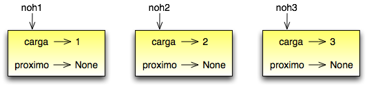
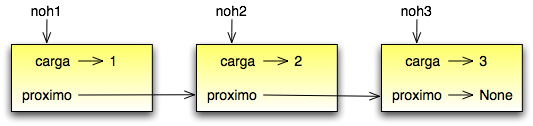
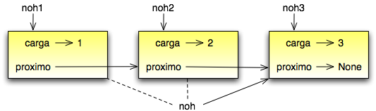
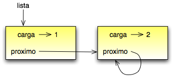
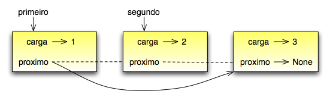

Tópicos
Nós temos visto exemplos de atributos que referenciam outros objetos, que são chamados referências embutidas (veja a Seção 12.8). Uma estrutura de dados comum, a lista ligada, tira vantagem desta característica.
Listas ligadas são constituídas de nós (nodos), onde cada nó contém uma referência para o próximo nó na lista. Além disto, cada nó contém uma unidade de dados chamada a carga.
Uma lista ligada é considerada uma estrutura de dados recorrente porque ela tem uma definição recorrente.
Uma lista ligada é:
Estruturas de dados recorrentes são adequadas para métodos recorrentes.
Como é usual quando se escreve uma nova classe, nós começaremos com os métodos de inicialização e __str__ de modo que podemos testar o mecanismo básico de se criar e mostrar o novo tipo:
class No:
def __init__(self, carga=None, proximo=None):
self.carga = carga
self.proximo = proximo
def __str__(self):
return str(self.carga)
Como de costume, os parâmetros para o método de inicialização são opcionais. Por omissão (default), ambos, a carga e a ligação, proximo, são definidas como None.
A representação string de um nó é simplesmente a representação string da carga. Como qualquer valor pode ser passado para a função str, nós podemos armazenar qualquer valor em uma lista.
Para testar a implementação até agora, nós criamos um No e o imprimimos:
>>> no = No("teste")
>>> print no
teste
Para ficar interessante, nós precisamos uma lista com mais do que um nó:
>>> no1 = No(1)
>>> no2 = No(2)
>>> no3 = No(3)
Este código cria três nós, mas nós ainda não temos uma lista ainda porque os nós não estão ligados. O diagrama de estado é parecido com este:
Para ligar os nós, temos que fazer o primeiro nó da lista referir ao segundo e o segundo nó referir ao terceiro:
>>> no1.proximo = no2
>>> no2.proximo = no3
A referência do terceiro nó é None, que indica que ele é o final da lista. Agora o diagrama de estado se parece com:
Agora você sabe como criar nós e ligá-los em uma lista. O que pode estar menos claro neste ponto é por quê.
Listas são úteis porque elas provêm um modo de montar múltiplos objetos em uma única entidade, algumas vezes chamada uma coleção. No exemplo, o primeiro nó da lista serve como uma referência para toda a lista.
Para passar uma lista como um parâmetro, você apenas tem que passar uma referência ao primeiro nó. Por exemplo, a função imprimeLista toma um único nó como um argumento. Iniciando com o cabeça da lista, ela imprime cada nó até que chegue ao fim:
def imprimeLista(no):
while no:
print no,
no = no.proximo
print
Para chamar este método, nós passamos uma referência ao primeiro no:
>>> imprimeLista(no1)
1 2 3
Dentro de imprimeLista nós temos uma referência para o primeiro nó da lista, mas não há variáveis que refiram aos outros nós. Nós temos que usar o valor proximo de cada nó para alcançar o próximo nó.
Para percorrer uma lista ligada, é comum usar uma variável laço como no para referir a cada um dos nós sucessivamente.
Este diagrama mostra o valor de lista e os valores que no assume:
Por convenção, listas são freqüentemente impressas em braquetes com vírgulas entre os elementos, como em [1, 2, 3]. Como um exercício, modifique imprimeLista para que ela gere uma saída neste formato.
É natural expressar muitas operações de listas utilizando métodos recorrentes. Por exemplo, o seguinte é um algoritmo recorrente para imprimir uma lista de trás para frente.
- Separe a lista em dois pedaços: o primeiro nó (chamado a cabeça); e o resto (chamado o rabo).
- Imprima o rabo de trás para frente.
- Imprima a cabeça.
Logicamente, o Passo 2, a chamada recorrente, assume que nós temos um modo de imprimir a lista de trás para frente. Mas se nós assumimos que a chamada recorrente funciona – o passo de fé – então podemos nos convencer de que o algoritmo funciona.
Tudo o que precisamos são um caso base e um modo de provar que para qualquer lista, nós iremos, ao final, chegar no caso base. Dada a definição recorrente de uma lista, um caso base natural é a lista vazia, representada por None:
def imprimeDeTrasParaFrente(lista):
if lista == None : return
cabeca = lista
rabo = lista.proximo
imprimeDeTrasParaFrente(rabo)
print cabeca,
A primeira linha trata o caso base fazendo nada. As próximas duas linhas dividem a lista em cabeca e rabo. As duas últimas linhas imprimem a lista. A vírgula no final da última linha impede o Python de imprimir uma nova linha após cada nó.
Nós invocamos este método como invocamos o imprimeLista:
>>> imprimeDeTrasParaFrente(no1)
3 2 1
O resultado é a lista de trás para frente.
Você pode se perguntar por quê imprimeLista e imprimeDeTrasParaFrente são funções e não métodos da classe No. A razão é que nós queremos usar None para representa a lista vazia e não é legal invocar um método sobre None. Esta limitação torna complicado escrever código de manipulação de lista em estilo orientado a objeto limpo.
Podemos provar que imprimeDeTrasParaFrente sempre termina? Em outras palavras, irá ela sempre atingir o caso base? De fato, a resposta é não. Algumas listas farão este método falhar.
Não há nada que impeça um nó de referenciar de volta um nó anterior na lista, incluindo ele mesmo. Por exemplo, esta figura mostra uma lista com dois nós, um dos quais refere-se a si mesmo:
Se nós invocarmos imprimeLista nesta lista, ele ficará em laço para sempre. Se nós invocarmos imprimeDeTrasParaFrente, ele recorrerá infinitamente. Este tipo de comportamento torna as listas infinitas difíceis de se lidar.
A despeito disto, elas ocasionalmente são úteis. Por exemplo, podemos representar um número como uma lista de dígitos e usar uma lista infinita para representar uma fração repetente.
Mesmo assim, é problemático que não possamos provar que imprimeLista e imprimeDeTrasParaFrente terminem. O melhor que podemos fazer é a afirmação hipotética, “Se a lista não contém laços, então este método terminará.” Este tipo de hipótese é chamado uma pré-condição. Ele impõe uma limitação sobre um dos parâmetros e descreve o comportamento do método se a limitação é satisfeita. Você verá mais exemplos em breve.
Uma parte de imprimeDeTrasParaFrente pode ter gerado surpresa:
cabeca = lista
rabo = lista.proximo
Após a primeira atribuição, cabeca e lista têm o mesmo tipo e o mesmo valor. Então por que nós criamos uma nova variável?
A razão é que as duas variáveis têm diferentes papéis. Quando pensamos em cabeca, pensamos como uma referência a um único nó, e quando pensamos em lista o fazemos como uma referência ao primeiro nó da lista. Estes “papéis” não são parte do programa; eles estão na mente do programador.
Em geral não podemos dizer olhando para o programa qual o papel que uma variável tem. Esta ambigüidade pode ser útil, mas também pode tornar os programas difíceis de serem lidos. Usamos freqüentemente nomes de variáveis como no e lista para documentar como pretendemos usar uma variável e algumas vezes criamos variáveis adicionais para remover a ambigüidade.
Poderíamos ter escrito imprimeDeTrasParaFrente sem cabeca e rabo, que a tornaria mais concisa mas possivelmente menos clara:
def imprimeDeTrasParaFrente(lista):
if lista == None : return
imprimeDeTrasParaFrente(lista.proximo)
print lista,
Olhando para as duas chamadas de função, temos que lembrar que imprimeDeTrasParaFrente trata seu argumento como uma coleção e print trata seu argumento como um objeto único.
O teorema da ambigüidade fundamental descreve a ambigüidade que é inerente à referência a um nó:
Uma variável que refere a um nó pode tratar o nó como um objeto único ou como o primeiro em uma lista de nós.
Existem duas maneiras de se modificar uma lista ligada. Obviamente, podemos modificar a carga dos nós, mas as operações mais interessantes são aquelas que adicionam, removem ou reordenam os nós.
Como um exemplo, vamos escrever um método que remove o segundo nó na lista e retorna uma referência ao nó removido:
def removeSegundo(lista):
if lista == None : return
primeiro = lista
segundo = lista.proximo
# faz o primeiro no referir ao terceiro
primeiro.proximo = segundo.proximo
# separa o segundo no do resto da lista
segundo.proximo = None
return segundo
Novamente, estamos usando variáveis temporárias para tornar o código mais fácil de ser lido. Aqui está como usar este método:
>>> imprimeLista(no1)
1 2 3
>>> removido = removeSegundo(no1)
>>> imprimeLista(removido)
2
>>> imprimeLista(no1)
1 3
Este diagrama de estado mostra o efeito da operação:
O que acontece se você invocar este método e passar uma lista com somente um elemento (um singleton)? O que acontece se você passar a lista vazia como um argumento? Existe uma pré-condição para este método? Se houver, corrija o método para tratar uma violação da pré-condição de modo razoável.
Freqüentemente é útil dividir uma operação de lista em dois métodos. Por exemplo, para imprimir uma lista de trás para frente no formato convencional de lista [3, 2, 1], podemos usar o método imprimeDeTrasParaFrente para imprimir 3, 2, mas queremos um metodo separado para imprimir os braquetes e o primeiro nó. Vamos chamá-lo de imprimeDeTrasParaFrenteLegal:
def imprimeDeTrasParaFrenteLegal(lista):
print "[",
if lista != None :
cabeca = lista
rabo = lista.proximo
imprimeDeTrasParaFrente(rabo)
print cabeca,
print "]",
Novamente, é uma boa idéia verificar métodos como este para ver se eles funcionam com casos especiais como uma lista vazia ou um singleton.
Quando usamos este método em algum lugar no programa, invocamos imprimeDeTrasParaFrenteLegal diretamente, e ele invoca imprimeDeTrasParaFrente por nós. Neste sentido, imprimeDeTrasParaFrenteLegal atua como um envoltório, e usa imprimeDeTrasParaFrente como um ajudador.
Existem alguns problemas sutis com o modo que implementamos listas. Em um inverso de causa e efeito, proporemos uma implementação alternativa primeiro e então explicaremos qual problema ela resolve.
Primeiro, criaremos uma nova classe chamada ListaLigada. Seus atributos são um inteiro que contém o comprimento da lista e uma referência para o primeiro nó. Objetos do tipo ListaLigada servem como cabos (handles) para se manipular listas de objetos No:
class ListaLigada:
def __init__(self):
self.comprimento = 0
self.cabeca = None
Uma coisa legal acerca da classe ListaLigada é que ela provê um lugar natural para se colocar funções envoltórias como imprimeDeTrasParaFrenteLegal, que podemos transformar em um método da classe ListaLigada:
class ListaLigada:
...
def imprimeDeTrasParaFrente(self):
print "[",
if self.cabeca != None :
self.cabeca.imprimeDeTrasParaFrente()
print "]",
class No:
...
def imprimeDeTrasParaFrente(self):
if self.proximo != None:
rabo = self.proximo
rabo.imprimeDeTrasParaFrente()
print self.carga,
Apenas para tornar as coisas confusas, mudamos o nome de imprimeDeTrasParaFrenteLegal. Agora existem dois métodos chamados imprimeDeTrasParaFrente: um na classe No (o ajudador); e um na classe ListaLigada``(o envoltório). Quano o envoltório invoca ``self.cabeca.imprimeDeTrasParaFrente, ele está invocando o ajudador, porque self.cabeca é um objeto No.
Outro benefício da classe ListaLigada é que ela torna mais fácil adicionar e remover o primeiro elemento de uma lista. Por exemplo, adicionaPrimeiro é um método para ListaLigada; ele toma um item de carga como argumento e o coloca no início da lista:
class ListaLigada:
...
def adicionaPrimeiro(self, carga):
no = No(carga)
no.proximo = self.cabeca
self.cabeca = no
self.comprimento = self.comprimento + 1
Como de costume, você deve conferir códigos como este para ver se eles tratam os casos especiais. Por exemplo, o que acontece se a lista está inicialmente vazia?
Algumas listas são “bem formadas”; outras não o são. Por exemplo, se uma lista contém um laço, ela fará muitos de nossos métodos falharem, de modo que podemos querer requerer que listas não contenham laços. Outro requerimento é que o valor de comprimento no objeto ListaLigada seja igual ao número real de nós da lista.
Requerimentos como estes são chamados de invariantes porque, idealmente, eles deveriam ser verdade para cada objeto o tempo todo. Especificar invariantes para objetos é um prática de programação útil porque torna mais fácil provar a correção do código, verificar a integridade das estruturas de dados e detectar erros.
Uma coisa que algumas vezes é confusa acerca de invariantes é que existem momentos em que eles são violados. Por exemplo, no meio de adicionaPrimeiro, após termos adicionado o nó mas antes de termos incrementado comprimento, o invariante é violado. Este tipo de violação é aceitável; de fato, é freqüentemente impossível modificar um objeto sem violar um invariante por, no mínimo, um pequeno instante. Normalmente, requeremos que cada método que viola um invariante deve restaurar este invariante.
Se há qualquer aumento significativo de código no qual o invariante é violado, é importante tornar isto claro nos comentários, de modo que nenhuma operação seja feita que dependa daquele invariante.